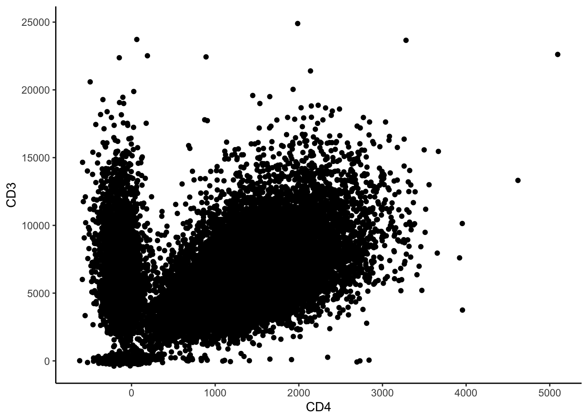
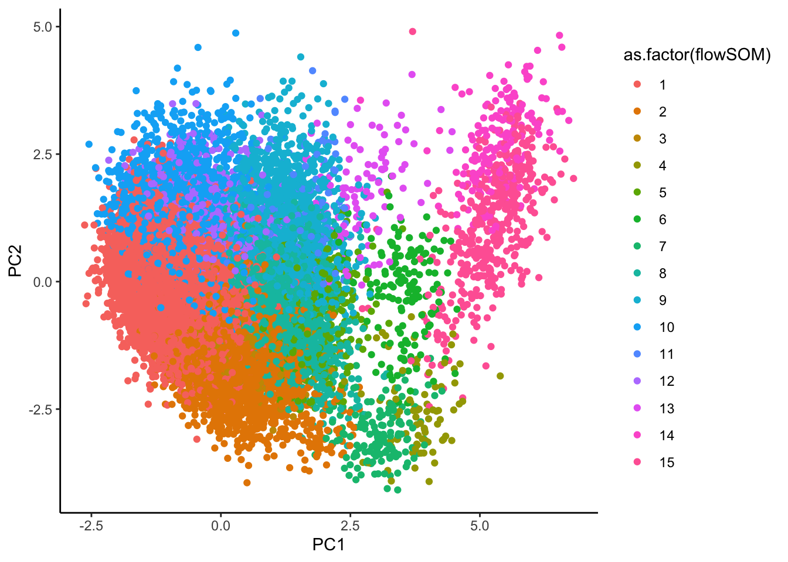
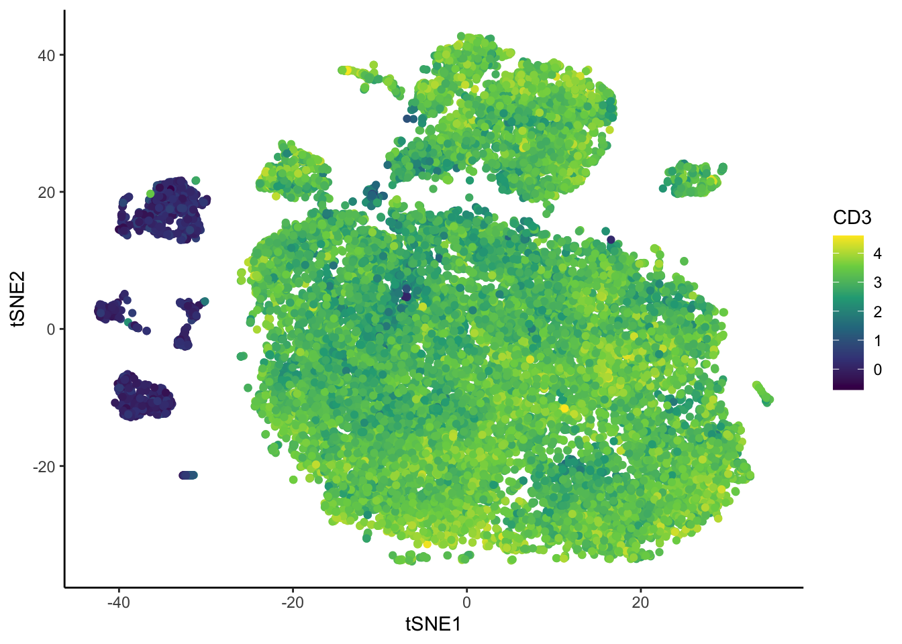
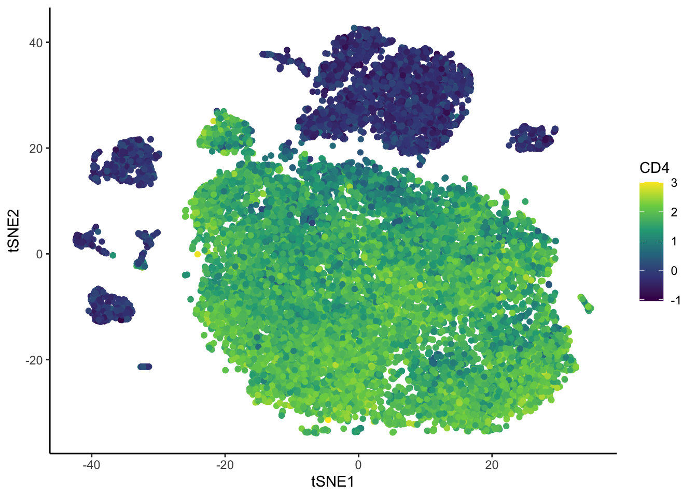
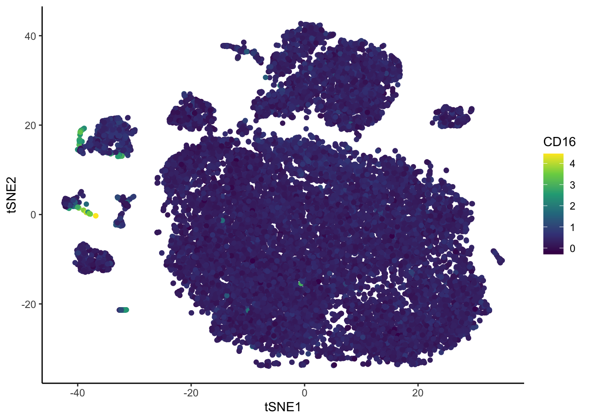

Last updated: 2025-04-28
Checks: 7 0
Knit directory:
DigitalResearchSkillsNetwork/
This reproducible R Markdown analysis was created with workflowr (version 1.7.1). The Checks tab describes the reproducibility checks that were applied when the results were created. The Past versions tab lists the development history.
Great! Since the R Markdown file has been committed to the Git repository, you know the exact version of the code that produced these results.
Great job! The global environment was empty. Objects defined in the global environment can affect the analysis in your R Markdown file in unknown ways. For reproduciblity it’s best to always run the code in an empty environment.
The command set.seed(1337) was run prior to running the
code in the R Markdown file. Setting a seed ensures that any results
that rely on randomness, e.g. subsampling or permutations, are
reproducible.
Great job! Recording the operating system, R version, and package versions is critical for reproducibility.
Nice! There were no cached chunks for this analysis, so you can be confident that you successfully produced the results during this run.
Great job! Using relative paths to the files within your workflowr project makes it easier to run your code on other machines.
Great! You are using Git for version control. Tracking code development and connecting the code version to the results is critical for reproducibility.
The results in this page were generated with repository version 0925bfe. See the Past versions tab to see a history of the changes made to the R Markdown and HTML files.
Note that you need to be careful to ensure that all relevant files for
the analysis have been committed to Git prior to generating the results
(you can use wflow_publish or
wflow_git_commit). workflowr only checks the R Markdown
file, but you know if there are other scripts or data files that it
depends on. Below is the status of the Git repository when the results
were generated:
Ignored files:
Ignored: .DS_Store
Ignored: .Rhistory
Ignored: analysis/.DS_Store
Ignored: analysis/.RData
Ignored: analysis/.Rhistory
Ignored: analysis/adit/.DS_Store
Unstaged changes:
Modified: analysis/202504.Rmd
Note that any generated files, e.g. HTML, png, CSS, etc., are not included in this status report because it is ok for generated content to have uncommitted changes.
These are the previous versions of the repository in which changes were
made to the R Markdown (analysis/202504_Workshop.Rmd) and
HTML (docs/202504_Workshop.html) files. If you’ve
configured a remote Git repository (see ?wflow_git_remote),
click on the hyperlinks in the table below to view the files as they
were in that past version.
| File | Version | Author | Date | Message |
|---|---|---|---|---|
| Rmd | 0925bfe | DrThomasOneil | 2025-04-28 | wflow_publish("analysis/202504_Workshop.Rmd") |
| html | ec75f7d | DrThomasOneil | 2025-04-26 | Build site. |
| Rmd | e8a3722 | DrThomasOneil | 2025-04-26 | wflow_publish("analysis/202504_Workshop.Rmd") |
| html | 938818e | DrThomasOneil | 2025-04-14 | Build site. |
| html | ed690e6 | DrThomasOneil | 2025-04-14 | Build site. |
| Rmd | 1e8103e | DrThomasOneil | 2025-04-14 | wflow_publish("analysis/*.Rmd") |
| html | cb886ef | DrThomasOneil | 2025-04-10 | Build site. |
| Rmd | eb0a784 | GitHub | 2025-04-09 | Update 202504_Workshop.Rmd |
| html | f6c0433 | YuchenLi | 2025-04-09 | Build site. |
| Rmd | 04953d6 | YuchenLi | 2025-04-09 | wflow_publish("analysis/*.Rmd") |
| html | 8d78b0f | YuchenLi | 2025-04-09 | Build site. |
| html | 7421f69 | DrThomasOneil | 2025-04-08 | Build site. |
| html | f2d3385 | DrThomasOneil | 2025-03-24 | update |
| html | 517dcf9 | DrThomasOneil | 2025-03-24 | Build site. |
| html | 6a4432b | DrThomasOneil | 2025-03-24 | Build site. |
| html | 1f218f3 | DrThomasOneil | 2025-03-24 | Build site. |
| html | dca90e9 | DrThomasOneil | 2025-03-24 | Build site. |
| html | 1d1c076 | DrThomasOneil | 2025-03-24 | Build site. |
| html | 956ba9b | DrThomasOneil | 2025-03-24 | Build site. |
| Rmd | 6b72e34 | DrThomasOneil | 2025-03-24 | wflow_publish(c("analysis/*.Rmd")) |
| html | d600337 | DrThomasOneil | 2025-03-18 | Build site. |
| html | b537f69 | DrThomasOneil | 2025-03-18 | Build site. |
| html | b7982e9 | DrThomasOneil | 2025-03-16 | Build site. |
| html | fc5dd81 | DrThomasOneil | 2025-03-16 | Build site. |
| html | 8e1c1a3 | DrThomasOneil | 2025-03-16 | Build site. |
| Rmd | d75e5ae | DrThomasOneil | 2025-03-16 | wflow_publish(c("analysis/*.Rmd")) |
Flow Cytometry in R: A Hands-On Introduction
This beginner-friendly, hands-on workshop will guide users through a complete flow cytometry analysis workflow in R, from loading data to visualizing results. Through practical exercises, we’ll cover essential steps like generating histograms and scatterplots, extracting summary statistics, subsetting data, and performing dimension reduction and clustering—all while demonstrating the advantages of reproducible reports with RMarkdown.
Whether you’re new to R or just curious about coding your analyses, this session will show you how accessible and powerful R can be for flow cytometry.
Your Demonstrators:
- Thomas O’Neil
- Yuchen Li (Online)
Author: Yuchen Li, Thomas O’Neil
Zoom link (recorded)
Introduction
In this workshop, we aim to give an overview of what is possible for flow analysis in R. We will touch on two workflows:
data visualisation and data collection
dimension reduction and clustering
We’ll use a 25-colour flow cytometry dataset of innate lymphoid cells (ILC), natural killer cells (NK), and innate-like T cells in human intestinal tissues, after excluding dead cells, doublets, mast cells and basophils, hematopoietic stem cells, myeloid cells and granulocytes, and B cells.
The original data was published as is available in OMIP-082
Before going further:
Dont forget to provide any feedback by emailing us at
drsn@wimr.org.auor filling out the feedback formVote on the next workshop!
Setup
We’ll take you through steps from the beginning, installing packages and loading data.
Preparation: packages and directories
Packages are collections of functions. Many are not in-built in the
base R but they do pretty cool things, enabling generating pretty plots,
performing data wrangling in an efficient way, etc. R also has a large
developer community, with many community-developed packages available on
platforms like Bioconductor or GitHub.
# Install packages used in this workshop.
#install.packages("tidyverse")
#install.packages("ggridges")
#install.packages("GGally")
#install.packages("cowplot")
#install.packages("data.table")
#install.packages("BiocManager")
#BiocManager::install("FuseSOM")
#BiocManager::install("FlowSOM")
#if(!require('remotes')) {install.packages('remotes')}
#remotes::install_github(repo = "immunedynamics/spectre")
# Load packages
library(tidyverse)
library(ggridges)
library(cowplot)
library(Spectre)
library(FuseSOM)
library(FlowSOM)
library(GGally)
library(umap)
library(Rtsne)
library(data.table)
theme_set(theme_classic())Create some folders for plots and data.
dir.create("plots")
dir.create("data")
download.file("https://raw.githubusercontent.com/DrThomasOneil/Digital-Research-Skills-Network/refs/heads/main/docs/assets/downloads/example_flowdata_omip082_20k.csv", destfile = "data/example_flowdata_omip082_20k.csv")
# Add `method = "curl"` in the download.file() if you are a Windows user and this line didn't work for you.Setting seed is crucial for reproducibility:
It’s a number of your choice, which pins down the “way” that how the random process will be performed when you re-run these codes. (Easier example: Say if you randomly take 10 numbers with a mean of 50, there will be tonnes of ways to generate the numbers. But a seed ensures that the report always returns the same set of numbers. It’s the similar idea when you run other algorithms including randomness, e.g. clustering and generating a UMAP).
Load flow cytometry data
The expression data is stored in a .csv file. We’ll
first load this in.
# Read the .csv file in the working directory.
ILC <- read.csv("data/example_flowdata_omip082_20k.csv")Have a look at the broad features of this dataset. In this dataset, the channel names are stored as column names. Each row represents a cell, storing expression values in each channel.
The column names are wordy, with markers, fluorophores, and channels.
We just need the marker names to proceed. The first column ‘X’ is just
indexing the number of rows. It’s not necessary either.
Remove the first column.
[1] "FSC.A" "FSC.H"
[3] "FSC.W" "SSC.A"
[5] "SSC.H" "SSC.W"
[7] "NKp44_BB515.B515_30.A" "Lineage_PerCP.Cy55.B710_50.A"
[9] "CD45_BB790.B820_60.A" "CD103_APC.R670_30.A"
[11] "FVS_700.R710_40.A" "CD4_APC_Cy7.R820_60.A"
[13] "HLA.DR_BUV395.U379_28.A" "CD16_BUV496.U515_30.A"
[15] "CD3_BUV563.U586_15.A" "CD94_BUV615.U610_20.A"
[17] "CD39_BUV661.U670_30.A" "CD56_BUV737.U740_35.A"
[19] "TCRVA72_BUV805.U820_60.A" "CKIT_BV421.V427_25.A"
[21] "CD14_CD19_BV480.V474_25.A" "CD49D_BV510.V525_50.A"
[23] "CD244_SB600.V610_20.A" "CD161_B650.V677_20.A"
[25] "TCRgt_BV711.V710_50.A" "CD69_BV750.V750_30.A"
[27] "CD25_BV786.V820_60.A" "ITAGB7_PE.Y586_15.A"
[29] "CRTH2_PEDAZZLE594.Y610_20.A" "NKp46_PECy5.Y670_30.A"
[31] "CD127_PECy7.Y820_60.A" "Time" Change the column names.
# Substitute everything after the first '_' with an empty "" in the column names that have the pattern "_" and something.
colnames(ILC) <- sub("_.*","",colnames(ILC)) #'_' is the exact character in the names, the '.' means 'any character', '*' means 'any of the preceding things'.
colnames(ILC) [1] "FSC.A" "FSC.H" "FSC.W" "SSC.A" "SSC.H" "SSC.W" "NKp44"
[8] "Lineage" "CD45" "CD103" "FVS" "CD4" "HLA.DR" "CD16"
[15] "CD3" "CD94" "CD39" "CD56" "TCRVA72" "CKIT" "CD14"
[22] "CD49D" "CD244" "CD161" "TCRgt" "CD69" "CD25" "ITAGB7"
[29] "CRTH2" "NKp46" "CD127" "Time" Fix up the broken names FVS700 and CD14&CD19.
# This tells R to: find which of the column equals "FVS" among all columns in the data, then change it to FVS700.
colnames(ILC)[colnames(ILC) == "FVS"] <- "FVS700"
colnames(ILC)[colnames(ILC) == "CD14"] <- "CD14.CD19"
# Have a look
colnames(ILC) [1] "FSC.A" "FSC.H" "FSC.W" "SSC.A" "SSC.H" "SSC.W"
[7] "NKp44" "Lineage" "CD45" "CD103" "FVS700" "CD4"
[13] "HLA.DR" "CD16" "CD3" "CD94" "CD39" "CD56"
[19] "TCRVA72" "CKIT" "CD14.CD19" "CD49D" "CD244" "CD161"
[25] "TCRgt" "CD69" "CD25" "ITAGB7" "CRTH2" "NKp46"
[31] "CD127" "Time" Time gate QC.
The data is already preprocessed in FlowJo. But if you are interested, you can view the Time gate, and filter the data based on this in R.
ggplot(ILC, aes(x = Time, y = FSC.A))+
geom_bin_2d(bins = 200, show.legend = FALSE)+
scale_fill_gradientn(colours = c("blue", "green", "yellow", "red"))+
geom_vline(xintercept = 4600000)
| Version | Author | Date |
|---|---|---|
| ec75f7d | DrThomasOneil | 2025-04-26 |
# Filter out the cells above the threshold.
ILC <- ILC[ILC$Time < 4600000,]
ggplot(ILC, aes(x = Time, y = FSC.A))+
geom_bin_2d(bins = 200, show.legend = FALSE)+
scale_fill_gradientn(colours = c("blue", "green", "yellow", "red"))Visualisations
Transformations
Raw Flow Cytometry data looks bad!
| Version | Author | Date |
|---|---|---|
| ec75f7d | DrThomasOneil | 2025-04-26 |
So we transform the data to make it look better. In FlowJo, when you adjust the axes, you can see several transformations available. One is arcsinh (the inverse of hyperbolic sin, if you want to get mathy). Smaller values centre around zero, and larger values separate, giving the appearance that we’re familiar with.
We are also able to adjust the level of transformation by dividing the values by some cofactor.
# decide on a cofactor - try changing it and seeing how the data changes
cofactor = 500
ILC_transf <- asinh(ILC[,7:31]/cofactor) #7:31 are the columns with markers.
ILC_transf <- cbind(ILC_transf, ILC[,c(1:6,32)]) # Add the first 6 columns & time back in.
ILC_transf %>% ggplot(aes(x=CD4, y=CD3))+
geom_bin_2d(bins = 200, show.legend=T)
| Version | Author | Date |
|---|---|---|
| ec75f7d | DrThomasOneil | 2025-04-26 |
You can view it for all markers together.
# Initialize an empty list to store the plots
plots <- list()
# Define the x-axis marker for the plots
xaxis = "CD39" # Choose an x-axis marker for comparison
# Loop through each column in the dataset
for(i in 1:ncol(ILC_transf)) {
# Get the marker name for the current column
Marker <- colnames(ILC_transf)[i]
# Generate a 2D bin plot for the current marker against the chosen x-axis marker
p <- ILC_transf %>%
ggplot(aes_string(x = xaxis, y = Marker)) +
geom_bin_2d(bins = 200, show.legend = FALSE) + # Create a heatmap-style scatter plot
scale_fill_gradientn(colors = c("blue", "yellow", "red")) # Define the color gradient
# Add the generated plot to the list
plots[[i]] <- p
}
# Combine all the plots into a grid layout and display them
cowplot::plot_grid(plotlist = plots)This code demonstrates how you would manually transform individual
columns in the dataset using different cofactors for each marker. It
creates a new dataset (ILC_transf_indiv) where specific
columns are transformed using the asinh function with their
respective cofactors. This allows for more granular control over
transformations.
ILC_transf_indiv <- ILC
ILC_transf_indiv[, "CD3"] <- asinh(ILC[,"CD3"]/1000)
ILC_transf_indiv[, "CD4"] <- asinh(ILC[,"CD4"]/500)
# and so on...
# Visualize it
ILC_transf_indiv %>% ggplot(aes(x=CD3, y=CD4))+
geom_bin_2d(bins = 200, show.legend=F) +
scale_fill_gradientn(colors = c("blue", "yellow", "red"))
rm(ILC_transf_indiv)Histograms
We can visualize the marker expressions via histograms and density plots.
# For example, this generates a histogram of CD3 expression.
ILC_transf %>%
ggplot(aes(x = CD3))+
# Plot the histogram, and change the fill colour to lightblue, the line colour to black.
geom_histogram(bins = 35, fill = "lightblue", colour ="black")+
# Add labels
ylab("Frequency")
| Version | Author | Date |
|---|---|---|
| ec75f7d | DrThomasOneil | 2025-04-26 |
# A density plot.
ILC_transf %>%
ggplot(aes(x = CD3))+
geom_density(linewidth = 0.7, colour = "red4", aes(fill = "red"), alpha = 0.5,show.legend = FALSE)+
ylab("Density")We can loop through the channels and create a density plot for all 25 markers.
# Initialise an empty list to store the plots
plots<- list()
# Loop through each column in the dataset
for (i in 1:ncol(ILC_transf)){
# Get the marker name for the current column
Marker <- colnames(ILC_transf)[i]
# Generate the histogram for the current marker
p <- ILC_transf %>%
ggplot(aes(x = .data[[Marker]]))+
geom_density(linewidth = 0.7, colour = "red4", aes(fill = "red"), alpha = 0.5,show.legend = FALSE)+
labs(x=Marker,y="")+
theme(axis.text = element_text(size=1))
# Add the generated plot to the list
plots[[i]] <- p
}
plot_grid(plotlist = plots[1:25])
| Version | Author | Date |
|---|---|---|
| ec75f7d | DrThomasOneil | 2025-04-26 |
Scatter plot
Like what we do in Flowjo, we can visualize 2 markers’ expressions, We can generate scatterplots.
| Version | Author | Date |
|---|---|---|
| ec75f7d | DrThomasOneil | 2025-04-26 |
# Generate a scatterplot with a density overlay.
ILC_transf %>% ggplot(aes(x=CD4, y=CD3))+
geom_bin_2d(bins = 200, show.legend = F)+
scale_fill_gradientn(colors = c("blue", "yellow", "red"))
| Version | Author | Date |
|---|---|---|
| ec75f7d | DrThomasOneil | 2025-04-26 |
Contour plot
And a 2-marker countour plot. You can easily make it more stylish by adding layers in ggplot!
# A contour plot of CD3 and CD4 expression values.
ILC_transf %>%
ggplot(aes(x = CD3, y = CD4))+
geom_density_2d(colour = "black", bins=50)+
xlab("CD3 BUV563")+
ylab("CD4 APC-Cy7")
| Version | Author | Date |
|---|---|---|
| ec75f7d | DrThomasOneil | 2025-04-26 |
# A contour plot of CD3 and CD4 expression over a scatter plot.
ILC_transf %>%
ggplot(aes(x = CD3, y = CD4))+
geom_point(color = "grey", alpha=0.5)+
geom_density_2d(colour = "black", bins=50, alpha=0.5)+
xlab("CD3 BUV563")+
ylab("CD4 APC-Cy7")
# A contour plot of CD3 and CD4 expression over a density plot.
ILC_transf %>%
ggplot(aes(x = CD3, y = CD4))+
geom_bin_2d(bins = 200)+
scale_fill_gradientn(colors = c("blue", "yellow", "red"))+
geom_density_2d(colour = "black")+
xlab("CD3 BUV563")+
ylab("CD4 APC-Cy7")Subsetting data and summary statistics
While not as efficient as FlowJo, we can subset data after exporting. We wouldn’t normally do this in R, but we’ll show you how you could subset in R and for the purposes of visualisation.
Subsetting
# Plot a 2-marker plot of CD3 and CD4 expression values.
ILC_transf %>%
ggplot(aes(x = CD3, y = CD4))+
geom_bin_2d(bins = 200)+
scale_fill_gradientn(colors = c("blue", "yellow", "red"))+
xlab("CD3 BUV563")+
ylab("CD4 APC-Cy7")+
geom_vline(xintercept = 1.3)+ #choose the x intercept
geom_hline(yintercept = 0.6) #choose the y interceptSubset the dataset based on these thresholds.
# This code creates a new column named 'subset' in the 'ILC_transf' dataset.
# The 'subset' column categorises rows based on the values of 'CD3' and 'CD4' columns:
# - "CD3+CD4+": if CD3 > 1.3 and CD4 > 0.6
# - "CD3+CD4-": if CD3 > 1.3 and CD4 <= 0.6
# - "CD3-CD4+": if CD3 <= 1.3 and CD4 > 0.6
# - "CD3-CD4-": if CD3 <= 1.3 and CD4 <= 0.6
# The 'mutate' function from the dplyr package is used to add this new column.
ILC_transf <- ILC_transf %>%
mutate(subset = case_when(
CD3 > 1.3 & CD4 > 0.6 ~ "CD3+CD4+",
CD3 > 1.3 & CD4 <= 0.6 ~ "CD3+CD4-",
CD3 <= 1.3 & CD4 > 0.6 ~ "CD3-CD4+",
TRUE ~ "CD3-CD4-"
))Visualise the subsets in dot plots
ILC_transf %>%
ggplot(aes(x = CD3, y = CD4, color=subset))+
geom_point()+
xlab("CD3 BUV563")+
ylab("CD4 APC-Cy7")+geom_vline(xintercept = 1.3)+
geom_hline(yintercept = 0.6)
| Version | Author | Date |
|---|---|---|
| ec75f7d | DrThomasOneil | 2025-04-26 |
# Look at different markers coloured by subset
ILC_transf %>%
ggplot(aes(x = CD56, y = CD16, color=subset))+
geom_point()
| Version | Author | Date |
|---|---|---|
| ec75f7d | DrThomasOneil | 2025-04-26 |
# Split by subset
ILC_transf %>%
ggplot(aes(x =CD56, y = CD16))+
geom_bin_2d(bins = 200)+
scale_fill_gradientn(colors = c("blue", "yellow", "red"))+
facet_wrap(~subset)ILC_transf %>%
ggplot(aes(x =FSC.A, y = SSC.A))+
geom_bin_2d(bins = 200)+
scale_fill_gradientn(colors = c("blue", "yellow", "red"))+
facet_wrap(~subset)
Histograms
ILC_transf %>%
ggplot(aes(x = CD56, color = subset, fill = subset)) +
geom_density(alpha = 0.2, linewidth = 1)+
xlim(quantile(ILC_transf$CD56, 0.001),quantile(ILC_transf$CD56, 0.999))
| Version | Author | Date |
|---|---|---|
| ec75f7d | DrThomasOneil | 2025-04-26 |
#using ggridges
ILC_transf %>%
ggplot(aes(x = CD56, y = subset, fill = subset)) +
geom_density_ridges(scale = 1.2, alpha = 0.6, colour = "black") +
theme_ridges() +
theme(legend.position = "none")+
labs(y="", x="", title = "CD56")+
xlim(quantile(ILC_transf$CD56, 0.001),quantile(ILC_transf$CD56, 0.999))You could mass print these using a loop, as we did for the density plots above. You can also adjust the marker you output, as not all markers or combinations of markers are useful.
Summary statistics
While subsetting is not as efficient as FlowJo, summarising data is!
We can first collect subset percentages and output them in a table, in text, and even in a plot. Then we can calculate summary statistics like MFI & gMFI.
CD3-CD4- CD3-CD4+ CD3+CD4- CD3+CD4+
6.56 0.22 17.79 75.44 # individual marker
ILC_transf %>%
group_by(subset) %>%
summarise(Percent = round(n()/nrow(ILC_transf)*100,2)) %>%
mutate(subset = factor(subset, levels = c("CD3+CD4+", "CD3+CD4-", "CD3-CD4+", "CD3-CD4-")))%>%
mutate(Subsets = "Subsets") %>%
ggplot(aes(x=Subsets,y = Percent, fill = subset)) +
geom_bar(stat = "identity", show.legend = FALSE) +
ylab("Percentage") +
xlab("") +
scale_fill_manual(values = c("CD3+CD4+" = "blue", "CD3+CD4-" = "red", "CD3-CD4+" = "green", "CD3-CD4-" = "yellow")) +
theme(axis.text.x = element_blank(), axis.ticks.x = element_blank()) +
theme(axis.text.y = element_text(size=10)) +
theme(legend.position = "none") +
theme(plot.title = element_text(hjust = 0.5, size=10)) +
ggtitle("Subsets of CD3+/-CD4+/- cells")We can also calculate the percentage of subsets in line, meaning we don’t have to change these lines of text based on different results or different data:
CD3+CD4+: 75.44%
CD3+CD4-: 17.79%
CD3-CD4+: 0.22%
CD3-CD4-: 6.56%
You can also quickly calculate summary statistics like MFI, gMFI, medianFI:
Arithmatic MFI
ILC$subset <- ILC_transf$subset # Add the subset column to the original data.
ILC %>%
group_by(subset) %>%
summarise(across(7:31, mean, .names = "MFI_{col}"))# A tibble: 4 × 26
subset MFI_NKp44 MFI_Lineage MFI_CD45 MFI_CD103 MFI_FVS700 MFI_CD4 MFI_HLA.DR
<chr> <dbl> <dbl> <dbl> <dbl> <dbl> <dbl> <dbl>
1 CD3+CD… 49.9 119. 9901. 591. -40.0 1419. 176.
2 CD3+CD… 55.5 131. 10543. 865. -42.8 -115. 193.
3 CD3-CD… 113. 491. 6915. 431. -5.70 918. 15030.
4 CD3-CD… 250. 242. 4114. 1158. -64.6 -69.4 1247.
# ℹ 18 more variables: MFI_CD16 <dbl>, MFI_CD3 <dbl>, MFI_CD94 <dbl>,
# MFI_CD39 <dbl>, MFI_CD56 <dbl>, MFI_TCRVA72 <dbl>, MFI_CKIT <dbl>,
# MFI_CD14.CD19 <dbl>, MFI_CD49D <dbl>, MFI_CD244 <dbl>, MFI_CD161 <dbl>,
# MFI_TCRgt <dbl>, MFI_CD69 <dbl>, MFI_CD25 <dbl>, MFI_ITAGB7 <dbl>,
# MFI_CRTH2 <dbl>, MFI_NKp46 <dbl>, MFI_CD127 <dbl>Median FI
# A tibble: 4 × 26
subset MFI_NKp44 MFI_Lineage MFI_CD45 MFI_CD103 MFI_FVS700 MFI_CD4 MFI_HLA.DR
<chr> <dbl> <dbl> <dbl> <dbl> <dbl> <dbl> <dbl>
1 CD3+CD… 49.9 119. 9901. 591. -40.0 1419. 176.
2 CD3+CD… 55.5 131. 10543. 865. -42.8 -115. 193.
3 CD3-CD… 113. 491. 6915. 431. -5.70 918. 15030.
4 CD3-CD… 250. 242. 4114. 1158. -64.6 -69.4 1247.
# ℹ 18 more variables: MFI_CD16 <dbl>, MFI_CD3 <dbl>, MFI_CD94 <dbl>,
# MFI_CD39 <dbl>, MFI_CD56 <dbl>, MFI_TCRVA72 <dbl>, MFI_CKIT <dbl>,
# MFI_CD14.CD19 <dbl>, MFI_CD49D <dbl>, MFI_CD244 <dbl>, MFI_CD161 <dbl>,
# MFI_TCRgt <dbl>, MFI_CD69 <dbl>, MFI_CD25 <dbl>, MFI_ITAGB7 <dbl>,
# MFI_CRTH2 <dbl>, MFI_NKp46 <dbl>, MFI_CD127 <dbl>Geometric MFI
The traditional formula written out would be like
ILC_transf %>% prod(CD56)^(1/nrow(CD56)). However, as
our data is compensated, there are meaningful negative values
and 0s that we don’t want to get rid of, which if you run on this data
removes two subsets entirely. FlowJo calculates the graph
spaces as gMFI to enable it to deal with negatives and 0s. Here in
this case, it may be better to stick with the arithmatic mean instead of
forcing the geometric mean.
nxn plots
You can also create a loop to view the nxn plots, and save them to the folder of your choice.
# Select only numeric marker columns
marker_cols <- colnames(ILC_transf)[1:25] # adjust if needed
# Make a customised function for plot streamline
custom_bin_plot <- function(data, mapping, ...) {
ggplot(data = data, mapping = mapping) +
geom_bin_2d(bins = 50) +
scale_fill_gradientn(colours = c("blue", "yellow", "red")) +
theme_minimal()
}
# Generate plots
p <- ggpairs(
ILC_transf,
columns = marker_cols,
lower = list(continuous = custom_bin_plot),
diag = list(continuous = wrap("densityDiag", alpha = 0.4)),
upper = list(continuous = wrap("cor", size = 3))
)
ggsave("plots/nxn.png",p, width=25, height=25,unit="in")
rm(p,custom_bin_plot, marker_cols)Dimension reduction and clustering
There are several ways to perform clustering (e.g. FlowSOM, FuseSOM) and dimension reduction (e.g. PCA, UMAP, tSNE).
In this section, we’ll cover clustering and dimension reduction on our one sample.
Clustering
Clustering groups our cells based on the input expressions we choose.
FlowSOM
# Perform clustering
clusters <- FlowSOM::FlowSOM(
input=as.matrix(ILC_transf[,1:32]),
silent = FALSE,
colsToUse = c(1,4,6:14,16:25),
nClus = 15)
# Annotate the cluster that the cell belongs to
ILC_transf$flowSOM<- GetMetaclusters(clusters)
FlowSOM::GetMetaclusterMFIs(clusters) NKp44 Lineage CD45 CD103 FVS700 CD4
1 0.08767095 0.2075124 3.652728 0.66374838 -0.070054837 1.718446732
2 0.06092035 0.2608379 3.845011 0.48375735 -0.002694851 1.673946500
3 0.07769296 0.2096058 3.670606 0.44195807 -0.049197283 1.519431591
4 0.26814000 0.8422096 3.020440 0.25983192 -0.070561014 0.285355955
5 0.20384046 0.2494431 2.165039 0.04000831 -0.069922924 -0.159006745
6 0.07682344 0.4272733 2.800478 -0.15280791 -0.195778430 -0.178643271
7 0.15199903 0.5864034 2.634233 0.10985178 -0.073452704 0.001656005
8 0.10020243 0.2194812 3.694064 0.52694911 -0.055605981 -0.216673389
9 0.09238955 0.2335644 3.808754 1.61759275 -0.114163850 -0.282545939
10 0.09819077 0.2178801 3.599065 0.80909690 -0.121560473 1.810596168
11 0.12451813 0.1840846 3.692152 1.65920115 -0.104120027 -0.273976639
12 0.11406716 0.2838156 3.787179 1.99422741 -0.129626542 1.700919032
13 0.17637908 0.2869712 3.344381 1.70810831 -0.072664808 -0.280821741
14 0.70718268 0.4607808 3.019883 2.31473327 -0.219905265 -0.238584988
15 0.71015617 0.4519169 2.985281 2.12613797 -0.129041672 -0.132830180
HLA.DR CD16 CD3 CD94 CD39 CD56 TCRVA72
1 0.2585904 0.3014053 3.14893150 -0.0001283541 0.2069036 0.8791201 0.5654020
2 0.4412144 0.2544301 3.25660467 -0.0122394441 2.5714781 0.9501370 0.6968365
3 0.2215236 0.2948854 2.99801254 -0.0097803352 0.2119111 0.6668085 0.5375435
4 4.3851631 0.7932066 0.33294968 0.0760867558 2.9933397 0.8673116 0.4591199
5 0.4977376 0.3020615 0.08235943 -0.0044702403 0.2099833 1.9980837 0.1392810
6 0.4974132 0.4490478 0.11416380 0.6835254431 0.4359418 3.7976246 0.2433500
7 0.3032004 0.5342692 0.27236900 0.0273353718 0.5225141 0.3988376 0.1233970
8 0.2560977 0.3381878 3.09349370 0.0707866177 0.1877662 0.8110133 0.5478587
9 0.2631046 0.3468565 3.39602506 0.2483764440 0.2166930 1.3286474 0.5868405
10 0.2624349 0.3024804 3.27759159 0.0006247615 0.2403607 2.8603338 0.5975648
11 0.3739428 0.3097136 3.29970193 0.7232792079 0.4476766 1.0290836 3.3287402
12 0.3099208 0.3261117 3.23529434 0.1027751938 0.2045608 1.1476330 0.6706844
13 0.4888059 0.4864017 3.60711050 0.3930174112 2.1050779 1.8307076 0.4118729
14 0.4755351 0.5450906 0.13690468 0.3112615645 2.8756585 3.7010598 0.3551278
15 0.5272312 0.5735796 0.19247857 0.1627501398 3.3976748 1.1171057 0.2884356
CKIT CD14.CD19 CD49D CD244 CD161 TCRgt CD69
1 0.1397609 0.1779661 0.2959321 0.6341562 2.3236103 0.2079571 3.0684111
2 0.2127095 0.2901192 0.3367369 0.4356396 1.7479348 0.1403525 2.2378151
3 0.1554675 0.2234804 0.3365653 0.5172071 0.8384712 0.1324767 1.0016602
4 0.6329466 0.8086958 1.1319287 1.3536867 0.5512469 0.2070493 0.2986748
5 1.5823526 0.1472093 0.5358167 0.6838114 1.8703939 0.1177222 2.7812300
6 0.1941248 0.0417533 0.5185655 2.2918398 2.1513495 0.2257744 1.5307155
7 0.4423564 0.2865438 0.5054426 1.1255010 0.1740590 0.1878523 1.0917209
8 0.1564134 0.2365468 0.3239223 1.9040470 1.5788118 0.1488845 2.6273956
9 0.1181918 0.2021875 0.4365611 2.2294233 1.6309892 0.2348087 2.9887999
10 0.2433276 0.1260104 0.3158472 0.7181301 2.3757333 0.2735456 3.3975062
11 0.1606230 0.2345162 0.3987706 2.2816653 1.7783434 0.2817596 3.1220107
12 0.1410920 0.1660120 0.4234817 1.0695182 1.7731206 0.2767200 3.4696200
13 0.2193442 0.3742922 0.5167282 2.5718895 0.5756401 2.0515333 3.6035721
14 0.3466539 0.2919101 0.7731310 2.8063775 1.0461413 0.2932870 3.4441962
15 0.4375035 0.5345708 0.6744828 2.7160012 1.0262325 0.2083201 3.2919337
CD25 ITAGB7 CRTH2 NKp46 CD127 FSC.A FSC.H
1 0.6439887 0.623462141 -0.07449993 -0.10346240 1.9387236 71242.25 43965.70
2 0.6330738 0.520151794 -0.04453720 -0.17500883 0.4855043 75832.98 47669.96
3 0.2266883 0.398961663 -0.05785664 -0.07085259 0.8520310 74653.98 46759.62
4 0.3406622 0.138838574 -0.06631734 -0.17470515 0.2055200 80909.42 50394.22
5 0.5917305 0.077761166 -0.07020644 0.10511041 1.9246757 65075.69 39761.16
6 0.3962337 0.009937556 -0.04532208 2.47066903 0.3197118 72070.27 43258.59
7 0.2819901 -0.014998766 0.23423104 0.03243181 0.1910981 73608.70 47642.46
8 0.3167695 0.829722762 -0.06298992 -0.03611803 1.4012212 75078.11 47320.37
9 0.6537131 1.722787678 -0.07341683 -0.02450578 1.8027968 79589.04 50587.21
10 0.7737251 0.695991188 -0.07791403 -0.10694155 2.0584894 70635.70 43593.60
11 0.9193848 1.687331736 -0.11279920 -0.01808203 1.6536188 78168.36 48935.48
12 1.0216262 1.758917928 -0.11142208 -0.04966688 2.3814716 70632.95 42753.42
13 0.9266705 2.040173292 -0.06207005 0.23646396 0.5336345 82701.09 53878.35
14 0.6812732 2.577180028 -0.09271222 2.87342191 0.2985345 84305.39 53874.07
15 0.6472251 2.477188349 -0.09255376 2.92880952 0.1796841 80065.25 50821.62
FSC.W SSC.A SSC.H SSC.W Time
1 244059.2 18685.87 15139.36 171783.2 2079785
2 244993.4 16685.34 13484.70 168152.5 2000531
3 244719.7 13986.63 11490.51 162274.8 1935460
4 253807.2 44873.54 32974.96 199168.0 1988384
5 241489.4 20407.00 16644.30 175056.4 2221552
6 244649.3 26768.72 21487.72 181203.0 1910565
7 247586.6 61283.54 48365.29 201206.0 2042293
8 244641.4 17166.27 14022.40 169141.0 2092554
9 246403.3 20116.76 16281.69 173157.9 1984503
10 244163.6 21168.63 17050.64 175143.1 2017840
11 247032.2 20402.41 16691.55 173394.4 2139599
12 243986.8 21179.40 17106.62 175203.0 2109206
13 246364.4 21614.27 17728.73 176139.2 1938876
14 248790.6 29310.82 23717.70 183269.9 2189056
15 247282.0 29583.98 24032.16 183313.5 1794975# Plot CD4 expression values on clusters
ILC_transf %>%
ggplot(aes(x = CD56, y = flowSOM, fill = flowSOM)) +
geom_density_ridges(scale = 1.2, alpha = 0.6, colour = "black") +
theme_ridges() +
theme(legend.position = "none")+
labs(y="", x="", title = "CD56")
| Version | Author | Date |
|---|---|---|
| ec75f7d | DrThomasOneil | 2025-04-26 |
FuseSOM
risomMarkers <- colnames(ILC_transf)[c(1,4,6:14,16:25)]
clusters <- runFuseSOM(data = as.matrix(ILC_transf[,1:32]), markers = risomMarkers,
numClusters = 15)
ILC_transf$fuseSOM<- as.numeric(unlist(lapply(str_split(clusters$clusters, "_"), function(x) x[[2]])))
ILC_transf %>%
ggplot(aes(x = CD39, y = as.factor(fuseSOM), fill=as.factor(fuseSOM))) +
geom_density_ridges(scale = 1.2, alpha = 0.6, colour = "black") +
theme_ridges() +
theme(legend.position = "none")+
labs(y="", x="", title = "CD39")
Dimension Reduction
We’ll generate a PCA, a tSNE and a UMAP. I’ll then run through all of this in the Spectre packge.
pca <- prcomp(as.matrix(ILC_transf[,c(1,4,6:14,16:25)]), center = TRUE)
ILC_transf <- ILC_transf %>%
mutate(PC1 = pca$x[,1],
PC2 = pca$x[,2])
# can take a while
tsne <- Rtsne(as.matrix(ILC_transf[,c(1,4,6:14,16:25)]), dims = 2, perplexity = 30, verbose = TRUE)
ILC_transf <- ILC_transf %>%
mutate(tSNE1 = tsne$Y[,1],
tSNE2 = tsne$Y[,2])
umap <- umap(ILC_transf[,c(1,4,6:14,16:25)])
ILC_transf <- ILC_transf %>%
mutate(UMAP1 = umap$layout[,1],
UMAP2 = umap$layout[,2])
rm(pca,umap,tsne)Visualisations
ILC_transf <- readRDS("data/clustered_data.rds")
ggplot(ILC_transf, aes(PC1,PC2, color= as.factor(flowSOM))) +
geom_point()
| Version | Author | Date |
|---|---|---|
| ec75f7d | DrThomasOneil | 2025-04-26 |

| Version | Author | Date |
|---|---|---|
| ec75f7d | DrThomasOneil | 2025-04-26 |

# Colour overlayed by the expression of one marker.
ggplot(ILC_transf, aes(UMAP1,UMAP2, color= CD3)) +
geom_point() +
scale_color_viridis_c()+xlim(-7,10)
ggplot(ILC_transf, aes(UMAP1,UMAP2, color= CD16)) +
geom_point() +
scale_color_viridis_c()+xlim(-7,10)
Spectre
Spectre has easy plotting tools to visualize the results of clustering and dimension reduction.
make.colour.plot(ILC_transf,
"tSNE1", "tSNE2", "subset",
add.label = TRUE,
blank.axis = T,
path = "plots")
| Version | Author | Date |
|---|---|---|
| ec75f7d | DrThomasOneil | 2025-04-26 |
make.colour.plot(ILC_transf,
"tSNE1", "tSNE2", "flowSOM",
col.type = 'factor',
add.label = TRUE,
blank.axis = T,
path = "plots")
| Version | Author | Date |
|---|---|---|
| ec75f7d | DrThomasOneil | 2025-04-26 |
Multi-plots:
make.multi.plot(ILC_transf,
"tSNE1", "tSNE2",
risomMarkers,
blank.axis = T,
colours = "viridis",
path = "plots")


And we can make the heatmap you’re used to seeing and save them.
exp <- do.aggregate(as.data.table(ILC_transf), use.cols = risomMarkers, by = c("flowSOM"))
make.pheatmap(exp, file.name = "plots/Pheatmap_FlowSOM.png", sample.col="flowSOM", plot.cols=risomMarkers)Spectre has also embedded FlowSOM clustering and dimension
reduction tools such as umap in easy codes, such as:
do.subsample()run.flowsom()run.umap()
Additional Considerations: QC
When looking at the raw data, or in the middle of data processing, you may consider filtering some cell. In the 1-marker plots below, you can see that there are a few extreme values that are displayed and pushing the majority of values squeezed together. e.g. HLA-DR:
ILC_transf %>%
ggplot(aes(x = HLA.DR))+
geom_density(linewidth = 0.7, colour = "red", aes(fill = "red"), alpha = 0.5,show.legend = FALSE)+
ylab("Density")+
# Visualise the values at the top 0.1% and bottom 0.1%.
geom_vline(xintercept = quantile(ILC_transf$HLA.DR, 0.999), colour = "blue", linewidth = 0.5)+
geom_vline(xintercept = quantile(ILC_transf$HLA.DR, 0.001), colour = "blue", linewidth = 0.5)+
# We can label the threshold lines: annotate as a text, at the position of the top and bottom 0.01%, and slightly adjust the label position horizontally.
annotate("text", x = 2, y = 0.5, label = "Top and bottom 0.1%", hjust = -0.1) 
| Version | Author | Date |
|---|---|---|
| ec75f7d | DrThomasOneil | 2025-04-26 |
View them for all channels.
# Create the empty list
plots_line <- list()
# Create the loop to generate plots.
for (i in 1:25){
# Get the marker names
Marker <- colnames(ILC_transf)[i]
# Generate the plots and put it into the list
p <- ILC_transf %>%
ggplot(aes(x = .data[[Marker]]))+
geom_density(linewidth = 0.7, colour = "red", fill = "red", alpha = 0.3,show.legend = FALSE)+
xlab(Marker)+
ylab("Density")+
# Add the newly written lines to visualise the outliers to this loop.
geom_vline(xintercept = quantile(ILC_transf[[i]], 0.999), colour = "blue", linewidth = 0.5)+
geom_vline(xintercept = quantile(ILC_transf[[i]], 0.001), colour = "blue", linewidth = 0.5)
# Put the plots into the list
plots_line[[length(plots_line)+1]] <- p
}
# Use a grid layout to view the plots
library(ggpubr)
ggpubr::ggarrange(plotlist = plots_line, ncol = 2, nrow = 4)$`1`
$`2`
$`3`
$`4`
attr(,"class")
[1] "list" "ggarrange"
To look at this in a more statistical way, you can create a
quick data summary of the minimum, maximum, mean, median and the
interquartile range.
NKp44 Lineage CD45 CD103
Min. :-0.60944 Min. :-0.74961 Min. :0.8776 Min. :-1.6764
1st Qu.:-0.02043 1st Qu.:-0.01364 1st Qu.:3.3551 1st Qu.: 0.2275
Median : 0.10043 Median : 0.22802 Median :3.6405 Median : 0.7676
Mean : 0.12175 Mean : 0.23908 Mean :3.5623 Mean : 0.8455
3rd Qu.: 0.23539 3rd Qu.: 0.47307 3rd Qu.:3.8650 3rd Qu.: 1.4379
Max. : 2.56281 Max. : 1.51645 Max. :4.8584 Max. : 3.8903
FVS700 CD4 HLA.DR CD16
Min. :-1.37739 Min. :-1.0414 Min. :-0.5972 Min. :-0.2901
1st Qu.:-0.26103 1st Qu.: 0.7355 1st Qu.: 0.1318 1st Qu.: 0.2128
Median :-0.08059 Median : 1.5659 Median : 0.2741 Median : 0.3146
Mean :-0.08100 Mean : 1.2394 Mean : 0.3409 Mean : 0.3452
3rd Qu.: 0.09863 3rd Qu.: 1.8856 3rd Qu.: 0.4526 3rd Qu.: 0.4264
Max. : 0.70678 Max. : 3.0169 Max. : 5.6978 Max. : 4.4567
CD3 CD94 CD39 CD56
Min. :-0.712 Min. :-1.40325 Min. :-0.98439 Min. :-1.6483
1st Qu.: 2.812 1st Qu.:-0.21409 1st Qu.:-0.01198 1st Qu.: 0.5906
Median : 3.145 Median : 0.03539 Median : 0.24073 Median : 1.0224
Mean : 2.968 Mean : 0.06666 Mean : 0.40428 Mean : 1.2305
3rd Qu.: 3.447 3rd Qu.: 0.29662 3rd Qu.: 0.53662 3rd Qu.: 1.6042
Max. : 4.601 Max. : 3.19569 Max. : 5.03303 Max. : 5.8967
TCRVA72 CKIT CD14.CD19 CD49D
Min. :-0.9207 Min. :-0.78687 Min. :-0.62200 Min. :-0.4446
1st Qu.: 0.3260 1st Qu.:-0.01042 1st Qu.: 0.02254 1st Qu.: 0.2099
Median : 0.5569 Median : 0.17073 Median : 0.18560 Median : 0.3337
Mean : 0.5825 Mean : 0.21415 Mean : 0.21396 Mean : 0.3559
3rd Qu.: 0.7734 3rd Qu.: 0.37904 3rd Qu.: 0.36621 3rd Qu.: 0.4694
Max. : 4.7995 Max. : 3.83387 Max. : 1.25671 Max. : 2.8257
CD244 CD161 TCRgt CD69
Min. :-0.6901 Min. :-0.8723 Min. :-0.936193 Min. :-0.9441
1st Qu.: 0.4753 1st Qu.: 1.3699 1st Qu.: 0.006448 1st Qu.: 2.5221
Median : 0.8006 Median : 2.0976 Median : 0.210441 Median : 3.0271
Mean : 1.0140 Mean : 1.9402 Mean : 0.226867 Mean : 2.8921
3rd Qu.: 1.4233 3rd Qu.: 2.6183 3rd Qu.: 0.422976 3rd Qu.: 3.4394
Max. : 3.6121 Max. : 4.5151 Max. : 3.696751 Max. : 5.0315
CD25 ITAGB7 CRTH2 NKp46
Min. :-2.04859 Min. :-1.1604 Min. :-0.81326 Min. :-1.02354
1st Qu.: 0.08245 1st Qu.: 0.3493 1st Qu.:-0.17971 1st Qu.:-0.21610
Median : 0.62505 Median : 0.7189 Median :-0.07405 Median :-0.07461
Mean : 0.55484 Mean : 0.8315 Mean :-0.06856 Mean : 0.03578
3rd Qu.: 1.06689 3rd Qu.: 1.1891 3rd Qu.: 0.03066 3rd Qu.: 0.07985
Max. : 3.55726 Max. : 4.2459 Max. : 2.94352 Max. : 3.86214
CD127 FSC.A FSC.H FSC.W
Min. :-0.9117 Min. : 33329 Min. :15411 Min. :168801
1st Qu.: 1.2209 1st Qu.: 61433 1st Qu.:36705 1st Qu.:238038
Median : 1.8260 Median : 72555 Median :45029 Median :244372
Mean : 1.6956 Mean : 72136 Mean :45157 Mean :247282
3rd Qu.: 2.2689 3rd Qu.: 82906 3rd Qu.:53280 3rd Qu.:251189
Max. : 3.7882 Max. :141562 Max. :95998 Max. :395580
SSC.A SSC.H SSC.W Time
Min. :-2606 Min. : 3338 Min. : 90908 Min. : 1182
1st Qu.:15561 1st Qu.:12672 1st Qu.:165542 1st Qu.:1042038
Median :19256 Median :15600 Median :172405 Median :2051315
Mean :20342 Mean :16431 Mean :174628 Mean :2077101
3rd Qu.:23568 3rd Qu.:18958 3rd Qu.:179231 3rd Qu.:3062559
Max. :97782 Max. :75316 Max. :415995 Max. :4599769
subset flowSOM fuseSOM PC1
Length:19588 6 :9296 Min. : 1.000 Min. :-2.6306
Class :character 1 :2493 1st Qu.: 1.000 1st Qu.:-0.9985
Mode :character 2 :1818 Median : 1.000 Median :-0.3773
7 :1517 Mean : 3.254 Mean : 0.0000
12 :1212 3rd Qu.: 5.000 3rd Qu.: 0.6658
10 :1000 Max. :15.000 Max. : 6.8083
(Other):2252
PC2 tSNE1 tSNE2 UMAP1
Min. :-4.08455 Min. :-35.4132 Min. :-44.7404 Min. :-35.2457
1st Qu.:-0.78765 1st Qu.:-15.6414 1st Qu.:-12.1809 1st Qu.: -2.5886
Median :-0.02214 Median : -0.6647 Median : 0.3175 Median : -0.7602
Mean : 0.00000 Mean : 0.0000 Mean : 0.0000 Mean : 0.0000
3rd Qu.: 0.79000 3rd Qu.: 12.6072 3rd Qu.: 12.2346 3rd Qu.: 2.1378
Max. : 4.90431 Max. : 43.0089 Max. : 37.6567 Max. : 9.1392
UMAP2
Min. :-5.908
1st Qu.:-3.448
Median :-1.536
Mean : 0.000
3rd Qu.: 2.129
Max. :14.211
Either being artificial or biological, these might interfere how the
computer interprets your data in the downstream clustering and dimension
reduction. Sometimes you may decide to investigate how these impact your
dataset and where they arise from. But if there are plenty of cells, and
the % outliers is super small, you might just want to filter them
out.
Filtering by %
You might want to filter out the top and bottom 0.1% of cells . Note
that this approach removes the cells that doesn’t fit within the top and
bottom 0.1% of ANY channel, and removes the cell from the entire
dataset. So be cautious about the % so you aren’t removing too many
cells when they are added up ( we’ll use 0.1% all the way for
demonstration purposes).
# Create an empty list.
outlier_flag <- list()
# Loop through the columns with markers
for (i in 1:25){
# Find the cell values
value <- ILC_transf[[i]]
# Get the marker names
Marker <- colnames(ILC_transf)[i]
# Find the thresholds of outliers
upper <- quantile(value, 0.999, na.rm = TRUE)
lower <- quantile(value, 0.001, na.rm = TRUE)
# Flag the outliers as 1, else as 0. And record them into the list.
flag <- ifelse(value < lower | value > upper, 1, 0)
outlier_flag[[length(outlier_flag)+1]] <- flag
}
# Turn the flags into a data table object.
outlier_flag <- as.data.table(outlier_flag)
colnames(outlier_flag)<- colnames(ILC_transf)[c(7:31)]
subset <- ILC_transf[rowSums(outlier_flag)==0,]
# Calculate the % of cell loss after filtering, then format it as being displayed in less digits, then paste a sentence together.
paste0("Cell loss: ",format((1-nrow(subset)/nrow(ILC_transf))*100, digits = 3), "%")[1] "Cell loss: 4.44%"# View the pre- and post-filtered data side by side, putting them in a grid.
cowplot::plot_grid(
ILC_transf %>%
ggplot(aes(x = HLA.DR))+
geom_density(linewidth = 0.7, colour = "red", fill = "red", alpha = 0.3, show.legend = FALSE)+
ylab("Density"),
subset %>%
ggplot(aes(x = HLA.DR))+
geom_density(linewidth = 0.7, colour = "red", fill = "red", alpha = 0.3, show.legend = FALSE)+
ylab("Density"),
# number of column equals 1.
ncol = 1
)
| Version | Author | Date |
|---|---|---|
| ec75f7d | DrThomasOneil | 2025-04-26 |
Filtering by fixed thresholds
You might want to filter out the data that is outside of certain
values per channel. A commonly used standard in data cleaning is
calculated based on interquartile ranges (IQR). The thresholds are any
data points that are 1.5 times of IQR above the 3rd quartile, or 1.5
times of IQR below the 1st quartile. This will keep the majority of data
points, however, it might also remove some true variance in the dataset
at extreme ends.
# Take HLA-DR as an example
# Calculate the interquartile range.
IQR <- IQR(ILC_transf$HLA.DR)
Q1 <- quantile(ILC_transf$HLA.DR, 0.25)
Q3 <- quantile(ILC_transf$HLA.DR, 0.75)
# Calculate the upper and lower thresholds
lowerfence <- Q1 - 1.5*IQR
upperfence <- Q3 + 1.5*IQR
# Only keep the cells which the HLA-DR value is within the thresholds.
filt <- ILC_transf[ILC_transf$HLA.DR > lowerfence & ILC_transf$HLA.DR < upperfence, ]
cowplot::plot_grid(
ILC_transf %>%
ggplot(aes(x = HLA.DR))+
geom_density(linewidth = 0.7, colour = "red", fill = "red", alpha = 0.3,show.legend = FALSE)+
ylab("Density"),
filt %>%
ggplot(aes(x = HLA.DR))+
geom_density(linewidth = 0.7, colour = "red", fill = "red", alpha = 0.3,show.legend = FALSE)+
ylab("Density"),
# number of column equals 1.
ncol = 1
)
| Version | Author | Date |
|---|---|---|
| ec75f7d | DrThomasOneil | 2025-04-26 |
Or, simply just choose an arbitrary threshold.
# Only keep the cells which transformed HLA-DR expression value < 2.
manual <- ILC_transf[ILC_transf$HLA.DR < 2, ]
cowplot::plot_grid(
ILC_transf %>%
ggplot(aes(x = HLA.DR))+
geom_density(linewidth = 0.7, colour = "red", fill = "red", alpha = 0.3,show.legend = FALSE)+
ylab("Density"),
manual %>%
ggplot(aes(x = HLA.DR))+
geom_density(linewidth = 0.7, colour = "red", fill = "red", alpha = 0.3,show.legend = FALSE)+
ylab("Density"),
# number of column equals 1.
ncol = 1
)
R version 4.4.0 (2024-04-24)
Platform: aarch64-apple-darwin20
Running under: macOS Sonoma 14.3
Matrix products: default
BLAS: /Library/Frameworks/R.framework/Versions/4.4-arm64/Resources/lib/libRblas.0.dylib
LAPACK: /Library/Frameworks/R.framework/Versions/4.4-arm64/Resources/lib/libRlapack.dylib; LAPACK version 3.12.0
locale:
[1] en_US.UTF-8/en_US.UTF-8/en_US.UTF-8/C/en_US.UTF-8/en_US.UTF-8
time zone: Australia/Sydney
tzcode source: internal
attached base packages:
[1] stats graphics grDevices utils datasets methods base
other attached packages:
[1] ggpubr_0.6.0 pheatmap_1.0.12 ggpointdensity_0.1.0
[4] RColorBrewer_1.1-3 ggthemes_5.1.0 colorRamps_2.3.4
[7] scales_1.3.0 data.table_1.17.0 Rtsne_0.17
[10] umap_0.2.10.0 GGally_2.2.1 FlowSOM_2.12.0
[13] igraph_2.1.4 FuseSOM_1.6.0 Spectre_1.2.0
[16] cowplot_1.1.3 ggridges_0.5.6 lubridate_1.9.4
[19] forcats_1.0.0 stringr_1.5.1 dplyr_1.1.4
[22] purrr_1.0.4 readr_2.1.5 tidyr_1.3.1
[25] tibble_3.2.1 ggplot2_3.5.1 tidyverse_2.0.0
[28] workflowr_1.7.1
loaded via a namespace (and not attached):
[1] rstudioapi_0.17.1 jsonlite_1.9.1
[3] magrittr_2.0.3 DataVisualizations_1.3.3
[5] farver_2.1.2 profileModel_0.6.1
[7] rmarkdown_2.29 ragg_1.3.3
[9] fs_1.6.5 zlibbioc_1.50.0
[11] vctrs_0.6.5 askpass_1.2.1
[13] rstatix_0.7.2 htmltools_0.5.8.1
[15] S4Arrays_1.4.1 broom_1.0.7
[17] SparseArray_1.4.8 Formula_1.2-5
[19] gridGraphics_0.5-1 sass_0.4.9
[21] bslib_0.9.0 princurve_2.1.6
[23] plyr_1.8.9 cachem_1.1.0
[25] whisker_0.4.1 lifecycle_1.0.4
[27] pkgconfig_2.0.3 Matrix_1.7-3
[29] R6_2.6.1 fastmap_1.2.0
[31] GenomeInfoDbData_1.2.12 MatrixGenerics_1.16.0
[33] digest_0.6.37 ggnewscale_0.5.1
[35] colorspace_2.1-1 S4Vectors_0.42.1
[37] ps_1.9.0 rprojroot_2.0.4
[39] RSpectra_0.16-2 textshaping_1.0.0
[41] GenomicRanges_1.56.2 vegan_2.6-10
[43] labeling_0.4.3 cytolib_2.16.0
[45] timechange_0.3.0 httr_1.4.7
[47] polyclip_1.10-7 abind_1.4-8
[49] coop_0.6-3 mgcv_1.9-1
[51] compiler_4.4.0 proxy_0.4-27
[53] withr_3.0.2 ConsensusClusterPlus_1.68.0
[55] backports_1.5.0 carData_3.0-5
[57] psych_2.4.12 ggstats_0.9.0
[59] ggforce_0.4.2 ggsignif_0.6.4
[61] MASS_7.3-65 openssl_2.3.2
[63] DelayedArray_0.30.1 permute_0.9-7
[65] tools_4.4.0 httpuv_1.6.15
[67] brglm_0.7.2 glue_1.8.0
[69] callr_3.7.6 nlme_3.1-167
[71] promises_1.3.2 grid_4.4.0
[73] getPass_0.2-4 cluster_2.1.8.1
[75] generics_0.1.3 isoband_0.2.7
[77] gtable_0.3.6 tzdb_0.5.0
[79] hms_1.1.3 utf8_1.2.4
[81] sp_2.2-0 car_3.1-3
[83] XVector_0.44.0 BiocGenerics_0.50.0
[85] pillar_1.10.1 yulab.utils_0.2.0
[87] later_1.4.1 splines_4.4.0
[89] flowCore_2.16.0 tweenr_2.0.3
[91] lattice_0.22-6 RProtoBufLib_2.16.0
[93] tidyselect_1.2.1 knitr_1.50
[95] git2r_0.35.0 gridExtra_2.3
[97] IRanges_2.38.1 SummarizedExperiment_1.34.0
[99] analogue_0.17-7 stats4_4.4.0
[101] xfun_0.51 Biobase_2.64.0
[103] matrixStats_1.5.0 stringi_1.8.4
[105] UCSC.utils_1.0.0 yaml_2.3.10
[107] evaluate_1.0.3 ggplotify_0.1.2
[109] cli_3.6.4 systemfonts_1.2.1
[111] reticulate_1.41.0.1 munsell_0.5.1
[113] processx_3.8.6 jquerylib_0.1.4
[115] Rcpp_1.0.14 GenomeInfoDb_1.40.1
[117] png_0.1-8 FCPS_1.3.4
[119] fastcluster_1.2.6 XML_3.99-0.18
[121] parallel_4.4.0 mclust_6.1.1
[123] viridisLite_0.4.2 crayon_1.5.3
[125] rlang_1.1.6 mnormt_2.1.1